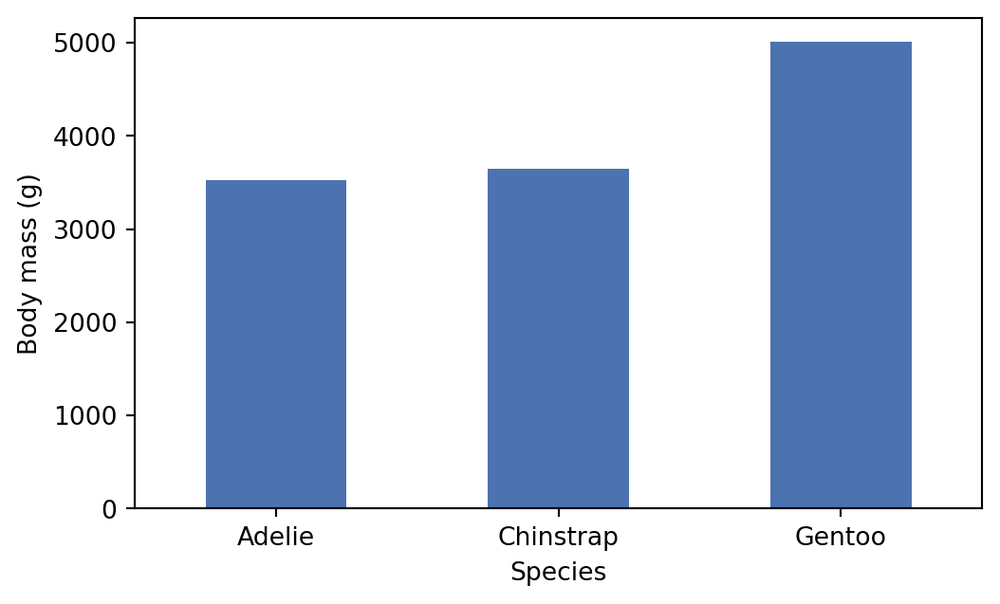

import pandas as pd
data = pd.read_csv("data/example.csv")
data.head()| species | island | bill_length_mm | body_mass_g | |
|---|---|---|---|---|
| 0 | Adelie | Torgersen | 39.1 | 3750 |
| 1 | Adelie | Torgersen | 39.5 | 3800 |
| 2 | Adelie | Biscoe | 37.8 | 3400 |
| 3 | Adelie | Dream | 40.3 | 3250 |
| 4 | Adelie | Dream | 36.7 | 3450 |
This is a book created from markdown and executable code. This page also works as a reference of common content elements: copy any of the examples below into your own chapters and adapt them.
See Knuth (1984) for additional discussion of literate programming.
By the end of this lesson, learners will be able to:
You can write text in bold, italics, inline code, strikethrough and hyperlinks. Footnotes are added like this.1
Block quotes are useful for highlighting a quotation or a key message.
Bullet points:
Numbered steps:
.qmd file.quarto preview to see your changes.Task list:
Add an image with a caption and a label, so that you can cross-reference it as Figure 1.1.

Always add fig-alt alternative text to make images accessible to screen reader users.
| Element | Syntax | Use it for |
|---|---|---|
| Bold | **text** |
Key terms |
| Code | `code` |
Commands and file names |
| Link | [text](url) |
External resources |
Table 1.1 summarises the markdown syntax used on this page.
Code in a ```{python} block runs when the book is built, and its output appears below it:
import pandas as pd
data = pd.read_csv("data/example.csv")
data.head()| species | island | bill_length_mm | body_mass_g | |
|---|---|---|---|---|
| 0 | Adelie | Torgersen | 39.1 | 3750 |
| 1 | Adelie | Torgersen | 39.5 | 3800 |
| 2 | Adelie | Biscoe | 37.8 | 3400 |
| 3 | Adelie | Dream | 40.3 | 3250 |
| 4 | Adelie | Dream | 36.7 | 3450 |
Use #| options at the top of a cell to control it. Here, echo: true shows the code and label/fig-cap turn the plot into a numbered figure, Figure 1.2:
import matplotlib.pyplot as plt
means = data.groupby("species")["body_mass_g"].mean()
fig, ax = plt.subplots(figsize=(6, 3.5))
means.plot.bar(ax=ax, color="#4C72B0")
ax.set_xlabel("Species")
ax.set_ylabel("Body mass (g)")
plt.xticks(rotation=0)
plt.show()
Other useful cell options:
#| echo: false hides the code and shows only the output.#| eval: false shows the code without running it.Use a plain code block (without braces) for code that should be shown but not run, such as terminal commands:
pip install -r requirements.txt
quarto previewTo build this book, you need Python with the packages listed in requirements.txt. Install them with pip install -r requirements.txt.
Inline maths: \(E = mc^2\). Display maths with a label, cross-referenced as Equation 1.1:
\[ \bar{x} = \frac{1}{n} \sum_{i=1}^{n} x_i \tag{1.1}\]
Use a note for extra information.
Use a tip for helpful advice or shortcuts.
Use a warning for common mistakes to avoid.
Use this for information learners must not miss.
Collapsible callouts are useful for hints and solutions.
Tabsets are useful for showing the same task in different languages. The Python tab runs; the R tab is display-only, because a page can only use one kernel.
print("Hello, world!")Hello, world!print("Hello, world!")Footnotes appear at the bottom of the page (or chapter, in the PDF).↩︎